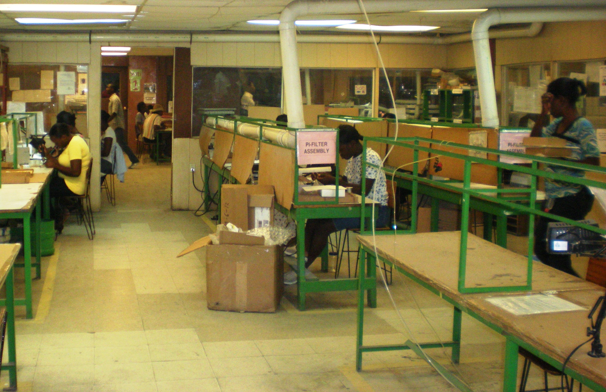

The faces and stories behind Haitian SMEs
By
Susana Garcia-Robles

While many of my MIF colleagues have already been to Haiti, this was my first visit to the country.
Winsome Leslie and I were there to visit potential investments of the Leopard Haiti Fund, a recently approved MIF VC/PE fund. Little did I know I was about to experience something much more meaningful at a professional and personal level than just an average due diligence mission…
Our first evening, in Port au Prince, we had dinner with our colleague Ralph Denize and the Leopard management team. One of the team members is a Swiss national who has worked in Haiti for the last 30 years and is very well respected in the Haitian financial community. The other two are two Haitian-born young professionals who have recently returned from abroad, lured by the promise of a new Haiti with a recently elected pro-business government, and wanting to be part of this change for the better. They are not blind or naïve about the challenges the country faces. These young men are encouraging examples of what the Haitian Diaspora can do for this country.
The MIF has a real presence in the country through the many programs we have sponsored. There is recognition of our interest in addressing poverty issues from a business perspective, to involve and help develop the private sector. Every time we would introduce ourselves, there was an immediate reply: “Oh, le FOMIN, oui, oui!”
The following day we visited companies that could be potential investments for the Leopard Haiti Fund. The first was an electronics manufacturing plant run by an American who has spent most of his life in Haiti, which employs about 500 people and has an ISO 9000 certification. The owner spoke to us about the challenges his company faced during the embargo years, and how he never once thought about packing his bags and leaving.
Most of his employees are women. His daughter and two other women are in managing positions in the company. He spoke of what he has done to make his employees’ lives better: teaching them English, serving breakfast and lunch, and offering the possibility of earning supermarket vouchers for arriving at work on time. He is also considering building a day care center and starting some sort of employee stock ownership plan.
The second company was a family-owned hotel. The father in the family died a few years ago and the son, who was living in Canada, decided to go back to Haiti. He is a typical example of the Haitian Diaspora, committed to making it in his home country. The hotel is well known for its restaurant buffet, and I can personally attest to the quality of its food! The hotel is in a zone that is not very safe at night, and the owners are betting that their expansion and other potential business entering the neighborhood will help improve security.
The third company, a partnership between a Haitian entrepreneur and an American, produces buildings with steel frameworks, which are more resistant to earthquakes and other natural disasters. They have just been commissioned to build a Catholic school, and if they meet their September deadline, will likey have the chance to more schools across the country. Their optimism is as strong as the challenges they face: they have been training workers in steel construction, and they think that they can convince consumers of the advantages of safe construction.
That evening, we dined at the home of the Swiss manager, who had invited the Minister of Commerce, USAID staff, and other representatives from the Haitian financial community. The recurrent theme in all conversations was the momentum for a new Haiti, the need to move within the window of opportunity, and the belief that this government is fully committed to improve conditions for business and is a friend of the private sector. All of them knew of the MIF but were intrigued about this new aspect of our work they didn’t know about, the MIF as an investor!
The following morning we visited another hotel in need of refurbishing. Hotels are popular business opportunities, both because of the earthquake damage to buildings, and the expectation that Haiti is becoming a more attractive destination for businesstravelers. This hotel, also a family business, is a wonderful resort hotel in Petionville, a getaway in the midst of the city. The property manager is young, elegant, soft- spoken Haitian woman who makes sure all her guests are happy. Her husband, too, had lived in other places, but decided to go back to Haiti to change the country. He laughed as he told us about how his friends asked if he had gone mad when they learned of his decision. The fifth company has a license over a region that produces Portoro marble, a yellow-black marble that can compete with the famous Carrara marble. Its owners see the possibility to position their country in a unique and high-end niche. They know they have a domestic market because government buildings, churches and hotels, driven by patriotism, will prefer to use Haitian Portoro marble. Internationally, they can cater to a demand for marble that is increasing in the Caricom countries, India, China and Russia. Haiti can offer tax breaks as well.
On my way to the airport, we stopped by Cite du Soleil, one of Port au Prince’s poorest neighborhoods, to drive by a recycling company and to visit a school where the MIF A GANAR project is being replicated. All the kids were coming out of classes and were trying to get a picture with us. I looked at those girls and thought that therein laid the promise of a new Haiti: girls from the Cite du Soleil in uniforms, receiving education! One of the instructors spoke about their gratitude to the MIF for this program, which can affect the lives of Haitian youth in such a positive way.
It was time for me to leave, as I needed to get to NYC to speak at a women’s conference. It was with a bit of nostalgia that I went through customs and security, feeling that I had learned a lot in only two and a half days, and grateful to have met such wonderful people.
And so, my follow-on post on Facebook, after my Monday status update that said, “On my way to Haiti and NYC, what a contrast in the same week” read: “ … and by nightfall, I have fallen in love with Haiti and its people.”